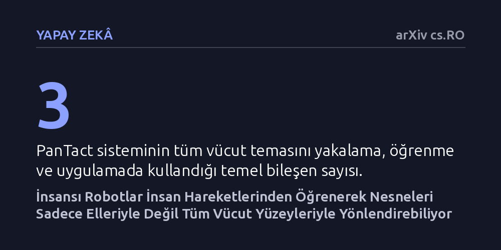

YAPAY-ZEKA · arXiv cs.RO · 2026-10-13
İnsansı robotların nesneleri yalnızca elleriyle değil tüm vücut yüzeyleriyle yönlendirebilmesi için giyilebilir temas arayüzüne dayalı bir öğrenme sistemi geliştirildi. Robotun gövdesinde ilave sensör olmadan, insan hareketlerinden öğrenerek vücuduyla itme, süpürme ve yük paylaşımı yapabildiği gösterildi.
İnsansı robotların dünyayla etkileşime girmek için sadece parmaklarına mahkûm olmadığını, ağır veya hacimli işlerde tüm gövdelerini etkin birer temas yüzeyine dönüştürebileceğini gösteriyor.

Bugüne kadar insansı robotlar üzerine yapılan çalışmaların ezici çoğunluğu, nesneleri tutma ve taşıma işini yalnızca ellere emanet etti; gövdenin çevreyle veya nesnelerle temas etmesi ise genellikle kaçınılması gereken bir çarpışma tehlikesi olarak görüldü. Oysa gündelik hayatımızda büyük bir kutuyu kucaklarken göğsümüzden destek alırız, ağır bir kapıyı omzumuzla iteriz veya birden fazla eşyayı kollarımızın arasına sıkıştırarak taşırız.
Robotların yalnızca ellerini kullanmaya zorlanması, sahip oldukları geniş temas yüzeylerini ve onlarca hareket serbestliğini atıl bırakıyor. Araştırmacılar bu temel kısıtlamayı aşmak için şu sorunun peşine düşüyor: İnsansı bir robot, nesneleri yönlendirmek için tıpkı bir insan gibi göğsünü, kollarını ve tüm uygun vücut yüzeylerini nasıl koordine edebilir?
Araştırma ekibi bu soruyu çözmek için "PanTact" adını verdikleri robot gerektirmeyen giyilebilir bir arayüz tasarladı. Deneylerde bir insan; kafasına yerleştirilen birinci şahıs kamerası, iki elindeki standart tutucular ve vücuduna takılan modüler temas yamalarıyla günlük görevleri yerine getirdi. Bu sayede insan hareket ederken nesneyle hangi vücut noktasının, hangi zamanlamayla temas ettiği hassas şekilde kaydedildi.
Elde edilen veriler, insanın bakış açısı ile robotun bakış açısı arasındaki farkı kapatan bir görsel-motor yapay zeka modeline aktarıldı. Model, ortamdaki nesneye göre hangi vücut yüzeyinin ne zaman temas etmesi gerektiğini tahmin ediyor; tüm vücut kontrol sistemi ise robotun kendi fiziksel eklem sınırları içinde kalarak bu temas hedeflerini gerçek hareketlere dönüştürüyor.
Geliştirilen sistem, Unitree G1 insansı robotu üzerinde gerçek dünya koşullarında denendi. Deneyin en çarpıcı yönü, robotun gövdesine fazladan hiçbir dokunma veya temas sensörü eklenmemiş olmasıydı; robot yalnızca standart kameraları ve kendi motor geri bildirimlerini kullanarak insan gösterimlerini başarıyla hayata geçirdi.
Uygulamalarda robotun nesneleri taşırken göğsüyle destek sağladığı, büyük eşyaları kollarıyla itip süpürdüğü ve ağır yükleri elleri ile gövdesi arasında bölüştürerek dengeli biçimde taşıdığı gözlemlendi. Bu sonuçlar, karmaşık donanım modifikasyonlarına girişmeden de bütüncül bir manipülasyon yeteneğinin kazandırılabileceğini gösterdi.
Bu bulgular, gelecekte insansı robotların ev ve depo gibi ortamlarda sadece küçük cisimleri parmaklarıyla tutan makineler olmaktan çıkıp, hacimli ve ağır nesneleri tüm gövdesiyle kavrayabilen pratik yardımcılara dönüşebileceğine işaret ediyor. Temas bilgisinin robottan bağımsız olarak insandan toplanabilmesi, veri üretim maliyetini de ciddi oranda düşürüyor.
Bununla birlikte çalışmanın sınırlarını doğru okumak gerekiyor. Yöntem şimdilik tek bir robot platformu üzerinde ve kontrollü görevlerde sınandı; farklı ağırlık, biçim ve kayganlıktaki nesnelerde sistemin dengesini nasıl koruyacağı henüz kapsamlı biçimde test edilmiş değil.